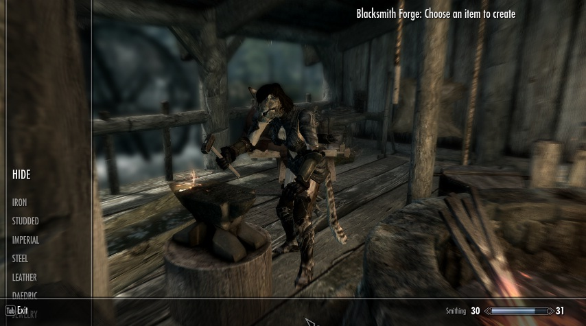
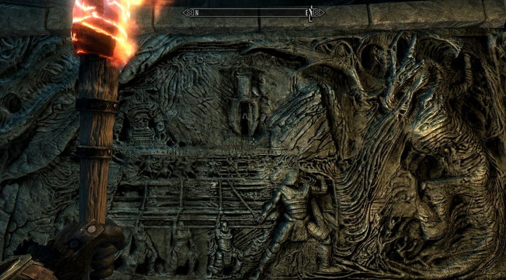
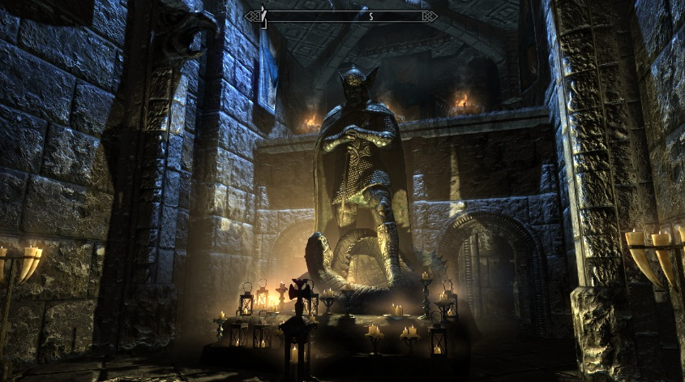
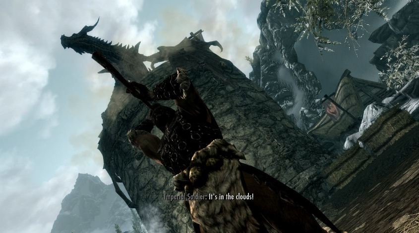
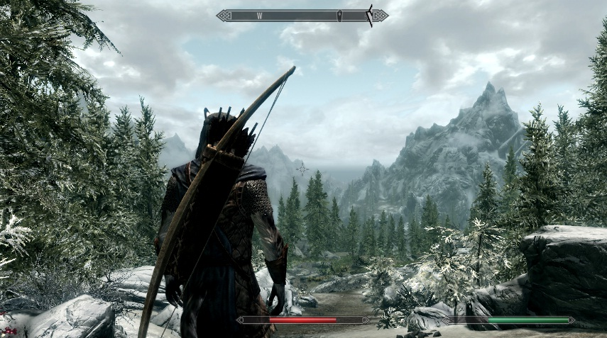

( รีวิว ) Skyrim เนื้อเรื่องของ Skyrim นั้นมีประวัติศาสตร์ที่ยาวนานมาก ขอเล่าสั้นๆ ว่า ปลายยุคที่ 3 ซึ่งเป็นช่วงเวลาที่พวกปีศาจบุกขึ้นมาอาลาวาดบนโลกของเรา ตัวเอกในเกมภาคที่สามสามารถปิดประตูนรกสำเร็จ แต่ก็ทำให้ราชวงศ์ Septim ล่มสลายเพราะการเสียสละในการปิดประตูนรก ทำให้บ้านเมืองขาดผู้นำ ช่วงเวลานั้น เหล่า Thalmor หรือเอลฟ์ชนชั้นสูงได้ฉวยโอกาสนี้ในการยกพลบุกโจมตีเมือง Imperial (หรือฝ่ายจักรพรรดิ) ซึ่งมีสภาพยํ่าแย่อยู่แล้วด้วยผลกระทบจากการบุกของปีศาจ ในที่สุดเมื่อรับมือพวก Thalmor ไม่ไหว ทางฝ่ายจักรพรรดิก็ต้องยอมเซ็นสัญญาสงบศึก เพื่อให้ Thalmor มีอำนาจในการปกครองแดน Skyrim และฝ่าย Thalmor ก็ออกกฎ ห้ามประชาชนในดินแดนนี้นับถือ Talos เป็นเทพเจ้า (Talos เป็นจักรพรรดิที่มีสายเลือกนักรบมังกรที่ยิ่งใหญ่มากจนชาวแดน Skyrim นับถือเป็นเทพ)






The Elder Scrolls V: Skyrim จะเป็นเกมแนว Open world ซึ่งคนเล่นมีอิสระที่จะไปไหนก็ได้ (แต่ถ้าไม่ไปตามเควส เจอมอนเตอร์เลเวลสูงกว่าตบตายไม่รับผิดชอบ) มีตัวละครทั้งหมด 10 เผ่าให้เลือกเล่น สร้างได้ทั้งชายหญิง (หรือจะสลับเพศเอาตอนเล่นด้วยคำสั่ง Code ก็ได้แล้วแต่) แต่าละเผ่าก็จะมีความสามารถแตกต่างกัน แต่โดยรวมแล้วจะเล่นสายไหนก็ไม่ได้เกี่ยวกับแต่ละเผ่ามากเท่าไหร่นัก เพราะตัวเอกมอบอิสระในการเล่นให้กับคนเล่นครับ (ในบทความรีวิวนี้ คนเขียนได้เล่นเผ่าครึ่งแมวป่า Khajiit ครับ)
ในเกมนี้คนเล่นจะสามารถเลือกมุมมองระหว่าง FPS หรือ TPS ก็ได้แล้วแต่ความถนัด คนเล่นสามารถถืออาวุธได้สองมือ จะเลือกเล่นเวทย์ข้างหนึ่ง อาวุธโจมตีประชิดข้างหนึ่งก็ได้ไม่มีปัญหา ใช้อาวุธอะไรก็ได้ไม่มีข้อจำกัด และสามารถเลือกอัพสกิลซึ่งแบ่งเป็นสามสาย เวทย์ , พลังชีวิต และโจมตีได้อย่างอิสระ สำคัญคือ ถ้าคนเล่นชื่นชอบการเป็นมนุษย์หมาป่าหรือแวมไพร์ก็สามารถเป็นในเกมได้เช่นกัน (แต่อย่ากลายร่างหรืองับคอคนเขาตอนกลาวันแสกๆ นะ โดยทหารในเมืองไล่ฆ่าก็ไม่รับผิดชอบเช่นกัน)
ในเกมนั้นจะมีค่าสถานะตัวละครให้ทั้งหมด 3 ค่า นั่นก็คือ เลือด , ค่าพลังเวทย์ และค่าความเหนื่อย โดยแต่ละท่า การวิ่ง หรือการถูกโจมตีจะใช้ค่าแตกต่างกันออกไป นอกจากนี้คนเล่นยังมีอิสระในการคราฟสิ่งของต่างๆ เพื่อสร้างอาวุธหรือชุดเกราะที่ดีกว่าเดิม , การเป็นเจ้าเมืองเพื่ออาศัยการมีอำนาจในการติดสินบน , ย่องขโมยข้าวของชาวบ้าน ในเกมนี้แม้ว่าคนเล่นจะเลือกเป็นคนดีหรือคนเลวได้ แต่จริงๆ แล้วเนื้อเรื่องในเกมนี้กลับทำเอาไว้กลางๆ ตามแบบชีวิตจริงของเรา นั่นก็คือ เป็นโลกสีเทาครับ่
นอกจากนี้ สิ่งที่ทำให้เกมนี้มีความน่าสนใจและยึดอายุตัวเกมไปได้ยาวนานนั่นก็คือ MOD นั่นเองครับ โดยคนเล่นสามารถดาวโหลด MOD มาใส่ตัวเกมได้หลายร้อยพันอย่าง ตั้งแต่ปั้นหน้าตัวละครให้เท่ขึ้น โมเอะขึ้น ไปจนถึงฉาก สถานที่ต่างๆ แม้แต่การเพิ่มเนื้อหาการเล่นใหม่ๆ เควสใหม่ๆ ที่ทำให้คนเล่นมีเรื่องราวการผจญภัยมากขึ้นแม้ว่าจะเล่นเนื้อเรื่องหลักจบไปแล้วก็ตาม ซึ่งแน่นอนว่า MOD ต่างๆ คนเล่นสามารถไปหาโหลดจากเว็บ MOD หรือโหลดเอาจากระบบของ Steam ได้เลยไม่มีปัญหา